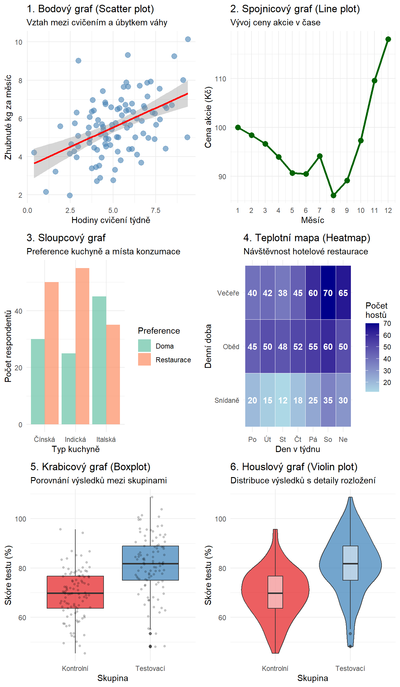

Zobrazit kód
library(ggplot2)
library(gridExtra)
set.seed(123)
# 1. Bodový graf (dvě číselné proměnné)
data_scatter <- data.frame(
hodiny_cviceni = rnorm(100, mean = 5, sd = 2),
zhubnuty_kg = rnorm(100, mean = 3, sd = 1)
)
data_scatter$zhubnuty_kg <- data_scatter$zhubnuty_kg + 0.5 * data_scatter$hodiny_cviceni + rnorm(100, 0, 1)
p1 <- ggplot(data_scatter, aes(x = hodiny_cviceni, y = zhubnuty_kg)) +
geom_point(color = "steelblue", alpha = 0.6, size = 3) +
geom_smooth(method = "lm", se = TRUE, color = "red") +
labs(
title = "1. Bodový graf (Scatter plot)",
subtitle = "Vztah mezi cvičením a úbytkem váhy",
x = "Hodiny cvičení týdně",
y = "Zhubnuté kg za měsíc"
) +
theme_minimal()
# 2. Spojnicový graf (časová řada)
data_line <- data.frame(
mesic = 1:12,
cena_akcie = cumsum(c(100, rnorm(11, mean = 2, sd = 5)))
)
p2 <- ggplot(data_line, aes(x = mesic, y = cena_akcie)) +
geom_line(color = "darkgreen", size = 1.2) +
geom_point(color = "darkgreen", size = 3) +
labs(
title = "2. Spojnicový graf (Line plot)",
subtitle = "Vývoj ceny akcie v čase",
x = "Měsíc",
y = "Cena akcie (Kč)"
) +
theme_minimal() +
scale_x_continuous(breaks = 1:12)
# 3. Sloupcový graf pro dvě kategorie
data_bar <- data.frame(
kuchyne = rep(c("Italská", "Čínská", "Indická"), each = 2),
preference = rep(c("Doma", "Restaurace"), 3),
pocet = c(45, 35, 30, 50, 25, 55)
)
p3 <- ggplot(data_bar, aes(x = kuchyne, y = pocet, fill = preference)) +
geom_col(position = "dodge", alpha = 0.7) +
labs(
title = "3. Sloupcový graf",
subtitle = "Preference kuchyně a místa konzumace",
x = "Typ kuchyně",
y = "Počet respondentů",
fill = "Preference"
) +
theme_minimal() +
scale_fill_brewer(palette = "Set2")
# 4. Teplotní mapa (heatmap)
data_heatmap <- expand.grid(
den = c("Po", "Út", "St", "Čt", "Pá", "So", "Ne"),
hodina = c("Snídaně", "Oběd", "Večeře")
)
data_heatmap$navstevnost <- c(
20, 15, 12, 18, 25, 35, 30, # Snídaně
45, 50, 48, 52, 55, 60, 50, # Oběd
40, 42, 38, 45, 60, 70, 65 # Večeře
)
p4 <- ggplot(data_heatmap, aes(x = den, y = hodina, fill = navstevnost)) +
geom_tile(color = "white") +
geom_text(aes(label = navstevnost), color = "white", fontface = "bold") +
scale_fill_gradient(low = "lightblue", high = "darkblue") +
labs(
title = "4. Teplotní mapa (Heatmap)",
subtitle = "Návštěvnost hotelové restaurace",
x = "Den v týdnu",
y = "Denní doba",
fill = "Počet\nhostů"
) +
theme_minimal()
# 5. Boxplot pro porovnání skupin
data_boxplot <- data.frame(
skupina = rep(c("Kontrolní", "Testovací"), each = 100),
vysledek = c(rnorm(100, mean = 70, sd = 10),
rnorm(100, mean = 80, sd = 12))
)
p5 <- ggplot(data_boxplot, aes(x = skupina, y = vysledek, fill = skupina)) +
geom_boxplot(alpha = 0.7) +
geom_jitter(width = 0.2, alpha = 0.2, size = 1) +
labs(
title = "5. Krabicový graf (Boxplot)",
subtitle = "Porovnání výsledků mezi skupinami",
x = "Skupina",
y = "Skóre testu (%)"
) +
theme_minimal() +
theme(legend.position = "none") +
scale_fill_brewer(palette = "Set1")
# 6. Violin plot
p6 <- ggplot(data_boxplot, aes(x = skupina, y = vysledek, fill = skupina)) +
geom_violin(alpha = 0.7) +
geom_boxplot(width = 0.2, fill = "white", alpha = 0.5) +
labs(
title = "6. Houslový graf (Violin plot)",
subtitle = "Distribuce výsledků s detaily rozložení",
x = "Skupina",
y = "Skóre testu (%)"
) +
theme_minimal() +
theme(legend.position = "none") +
scale_fill_brewer(palette = "Set1")
# Uspořádání grafů
gridExtra::grid.arrange(p1, p2, p3, p4, p5, p6, ncol = 2)